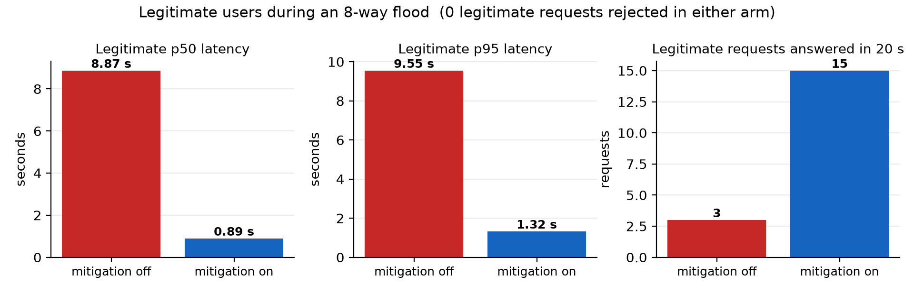
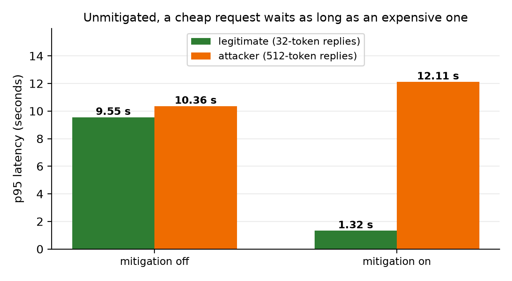
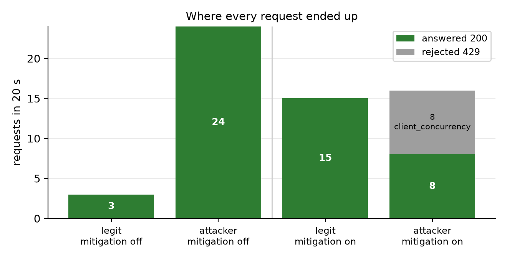

The unit of load on an inference server is not the request — it is the token.
Every rate limiter in common use disagrees. nginx limit_req, API-gateway
requests-per-second rules and WAF throttles all count requests, because for a conventional
web service requests cost roughly the same. On an LLM endpoint they do not: a 24-token chat
reply and a 2048-token generation differ in GPU cost by nearly three orders of magnitude, and
both are a single well-formed request.
That gap is the whole attack. On our T4 we measured decoding at
0.035 s per token, so one 1024-token generation occupies a vLLM sequence
slot for roughly 36 seconds. The server was launched with
--max-num-seqs 8. Eight requests — a rate that no sane
requests-per-second limit would block, and that no anomaly rule would call a flood —
therefore hold the entire GPU for half a minute. The attacker needs no botnet, no spoofing
and no volume. It needs a large max_tokens.
The user is a team self-hosting an open-weights model (vLLM, TGI, Ollama) behind a public or partner-facing API, without per-tenant GPU isolation — which is the normal situation, because dedicating a GPU per tenant is what self-hosting is meant to avoid. Our gateway occupies the position an API gateway already occupies, speaks the same OpenAI-compatible protocol, and replaces the request-per-second rule living there with a token-cost budget. Nothing about the model, the server or the client changes: the endpoint URL moves by one port.
Two things follow from that placement, and both shaped the design. Rejection has to be
immediate and legible — a caller that waits 30 seconds for a 503 has already been
denied service, so every refusal carries an X-Gateway-Reason header and a
Retry-After. And the mitigation must be measurable: the reason a team
tolerates a component in front of its inference server is evidence that it helps, which means
the gateway's job includes producing the before/after numbers in this report.
A FastAPI reverse proxy in front of vLLM, carrying three admission layers. Every decision is
written to gateway.jsonl with its reason, so the analysis reads the gateway's own
record of what it did rather than inferring it from latency.
X-Client-ID and X-Traffic-Label. Never retries a
rejection.
prompt+max_tokens--max-num-seqs 8. Its
/metrics queue depth is polled and fed back into layer 2.
gateway.jsonl plus a sampled state series, joined on
request ID to produce the table and figures in this report.
Each client gets two buckets. The first meters request rate, as any limiter would. The second
meters cost, and is charged prompt_tokens + max_tokens
at admission, before generation starts. Charging up front is the load-bearing
detail: the true cost is only known when a generation finishes, and by then the GPU time is
spent, so the limiter must bill the declared intent. Three corollaries follow, each a way an
attacker would otherwise get in free: an omitted max_tokens is charged the
server's default, not zero, since the model will generate to the context limit; n
and best_of multiply the charge because they multiply the decode work; and a
request costing more than the whole bucket is refused as cost_exceeds_budget
rather than told to retry, since no wait would ever admit it.
global_max_inflight is held at the backend's
--max-num-seqs. This is the single most important number in the system and the
least obvious. Admit more than vLLM can batch and the queue still forms — but it forms
inside vLLM, where the gateway can no longer see it, reorder it, or shed from it. We
measured exactly that: with 48 admission slots against a backend accepting 8, gateway pressure
read zero for an entire run while legitimate p95 reached 4.0 s. Beyond the cap, a request
waits a bounded 200 ms for a slot and is then refused with a 503. Pressure is evaluated
from four signals — local occupancy, a latency EWMA, and vLLM's own
num_requests_waiting and num_requests_running — each with
separate high and low water marks, so the controller cannot flap between shedding and admitting
on every tick. Under pressure, shedding is fair-share: clients are ranked by their share
of recent token cost and only those above an equal share are refused, which is what keeps a
quiet client flowing while a flooder absorbs the rejections.
A variational autoencoder over a 12-feature per-client behavioural window (request and cost rate, prompt-size distribution, inter-arrival mean and spread, concurrency, prompt repeat ratio, error rate, latency). It is trained on normal traffic only and scores reconstruction error as novelty, so no attack is ever labelled for it and there is no leakage between the attack profiles and the detector that flags them. Score tiers tighten a client's bucket multipliers rather than blocking outright, decay instead of latching, and fail open.
X-Traffic-Label. The label is logged for
the analysis join and is invisible to admission control — branching on ground truth would
turn "attacker rejection rate" into a measurement of the label rather than of the defence.
(2) Mitigation-off still goes through the gateway. configs/off.yaml is
a pure passthrough that still logs, so the proxy hop appears in both arms; a baseline that
bypassed the gateway would credit the mitigation with removing a cost it never added.
(3) The load generator never retries a 429 or 503. A retrying client converts
rejection into amplification and makes the rejection rate meaningless.
Two things make cost-aware admission practical today that were not available a few years ago.
vLLM's continuous batching and paged KV cache mean the scarce resource is
sequence slots and KV blocks — a countable quantity with a known limit —
rather than diffuse CPU time. And vLLM exports num_requests_running and
num_requests_waiting on a Prometheus endpoint, so a proxy can read the backend's
real queue instead of guessing at it from response times. A design predating that telemetry had
to infer saturation from latency alone, which is a lagging signal: by the time p95 moves, the
queue is already deep. We use latency as one of four inputs, and the other three are
structural.
The same shift is why a purely learned detector would be the wrong primary mechanism here. Load shedding has to be correct on the first request of an attack it has never seen, and a model cannot promise that. So the two required mechanisms are deterministic and auditable, the VAE only adjusts their parameters, and the whole system degrades to the deterministic pair if the model is unavailable.
| Component | What was actually run |
|---|---|
| Target service | vLLM 0.29.0, Qwen2.5-0.5B-Instruct, --dtype half --max-model-len 2048 --gpu-memory-utilization 0.85 --max-num-seqs 8, Tesla T4 16 GB. Real GPU, real weights, real Prometheus metrics. |
| Load profiles | Normal, sudden spike, sustained flood and low-and-slow (Locust), plus a two-client probe that drives a cheap legitimate stream against an expensive attacker stream. |
| Mitigation arms | Four configs selected by one flag: off, ratelimit, ratelimit_queue, full. The ablation isolates which mechanism produced which effect. |
| Automated tests | 75 unit and integration tests, including end-to-end runs over real sockets against a backend stand-in. |
| GPU-free reproduction | gateway.fake_vllm reproduces the measured T4 timing (0.035 s/token decode, 0.0026 s batch penalty, 0.0002 s/token prefill) and vLLM's metric shape, so the whole experiment — including saturation — runs on a laptop and in CI. |
The mitigation was the easy half. Most of our effort went into tests that appeared to pass while measuring nothing, and each one forced a design change.
(a) The first overload test did not overload anything. Fifty concurrent "expensive" requests returned p50 5.603 s, p95 5.700 s, max 5.701 s. Those three values lying within 0.1 s of each other is the tell: every request finished in the same batch, so no queue ever formed and the run was a measurement of batch latency, not of saturation. Two causes. Automatic prefix caching is on by default in vLLM's V1 engine, and all fifty prompts were identical, so forty-nine of them skipped prefill almost entirely. And KV capacity was never the constraint: at 24 layers × 2 KV heads × 64 head-dim × 2 × 2 bytes, this model spends about 12 KB per token, so ~11 GB of KV cache holds ~900k tokens against a demand of ~100k — a 9× margin. Changed: randomised prompts, prefix caching disabled for load runs, and a concurrency sweep to locate the knee rather than assuming one exists at 50.
(b) The queue-depth series was all zeros, and the server looked healthy.
The metrics sampler scraped /metrics inside a bare except: pass, and
read a missing value as 0. Under load, /metrics is exactly what stops
responding — so the moment the queue got deep, the recorded queue depth went to zero.
Changed: the gateway's pressure controller treats an absent upstream snapshot as
unknown and never as empty; it falls back to the two signals it owns locally, and
staleness is recorded per sample and per request so a gap in the data is visible as a finding
rather than smoothing into a flat line.
(c) Identity rotation defeated every per-client defence. Splitting the same flood across eight client IDs produced zero rejections and a legitimate p95 of 4.0 s. This is not a bug to patch; per-client buckets dilute under rotation by construction, and any limiter keyed on identity has the same hole. Changed: a reserved admission lane partitioned on request cost rather than identity. Cheap requests can always use it, expensive ones never can, and an attacker gains nothing from rotating IDs because the partition does not ask who is calling.
(d) Fair-share inverted under long-running requests. Cost is charged at
admission and aged out of a 10-second window, but a 512–1024-token generation runs far
longer than that. So an attacker holding all eight slots aged out to a recorded cost of
0.0, while the steady cheap client — the only one with recent
cost — measured as 100% of the window and was shed: legitimate traffic took
45.5% rejection at cost_share=1.0, with the flooder refused for
nothing. Precisely backwards, and worst on the low-and-slow profile, which is built out of
long-lived requests on purpose. Changed: in-flight cost stays charged until the request
completes, is released on completion rather than held as a penalty, and is dropped entirely when
a client has nothing running, so a lost completion cannot charge a client forever.
ConnectError because no gateway was
listening. Its 35,128 attacker "requests" are refused connections returning instantly, not
load.Both arms below are the same load against the same live vLLM server on the same T4, differing only in the config the gateway was started with: eight concurrent 512-token attacker requests from a single identity, against a legitimate client issuing one 32-token request every 0.4 s, for 20 seconds.
| Metric | Mitigation off | Mitigation on | Change |
|---|---|---|---|
| Legitimate p95 latency | 9.546 s | 1.323 s | 7.2× lower |
| Legitimate p50 latency | 8.867 s | 0.894 s | 9.9× lower |
| Legitimate requests answered | 3 | 15 | 5.0× more |
| Legitimate success rate | 100% | 100% | — |
| Legitimate requests rejected | 0 | 0 | — |
| Attacker requests admitted | 24 | 8 | 3.0× fewer |
| Attacker rejection rate | 0% | 50% | +50 pts |
| Attacker p95 latency | 10.355 s | 12.113 s | 1.17× higher |
| Rejection reason | — | client_concurrency ×8 (429) |



The capacity did not appear from nowhere and the total work done barely changed — it was reallocated. Unmitigated, eight expensive generations hold all eight sequence slots, and a 32-token request arriving behind them waits for one to finish; that is the 8.9 s. The gateway's cap keeps the queue on its own side of the wire, where the reserved cheap lane and fair-share ranking can order it, so a small request is no longer stuck behind a large one. Note that the attacker's own p95 rose, from 10.36 s to 12.11 s, while half its requests were refused outright. Being an expensive client became slower and less reliable, which is exactly the incentive a cost-based limiter is supposed to create.
client_concurrency — a per-client cap, which is the one mechanism that
identity rotation defeats (finding c). The cost-partitioned reserved lane exists for the
rotating case and is verified against the calibrated stand-in, not yet on the T4. The
honest headline is therefore: proven on the GPU against a single-identity flood, proven in
simulation against a rotating one.global_max_inflight tracks --max-num-seqs, but the latency water
marks still assume a cheaper request mix than a 1024-token ceiling produces, which leaves
pressure reading ELEVATED for most of a flood. Calibration follows the concurrency sweep.Rate limiting the wrong quantity provides no protection at all. Eight
requests, within any plausible requests-per-second budget, took a GPU-backed endpoint from
sub-second to nine-second responses. Charging prompt_tokens + max_tokens against a
per-client budget at admission time, and capping concurrent admissions at the backend's real
batch width, restored a 1.3 s p95 and served five times as many legitimate requests without
refusing a single one.
Hold the queue where you can still act on it. Admitting more than
--max-num-seqs does not remove the queue, it only moves it somewhere the mitigation
cannot reach. This one alignment mattered more than any threshold we tuned.
Partition on cost, not on identity. Every identity-keyed defence dilutes under rotation, and ours did — eight IDs, zero rejections. The mechanism that survived was the one that never asks who is calling.
The measurement is as easy to get wrong as the mitigation. Our first flood did not overload the server, and our first queue-depth series read zero precisely when the queue was deepest. Three of the four design changes above came from a test that proved nothing while appearing to pass — which is why the gateway records its own decisions, its own reasons, and the staleness of the signals it acted on.
report/make_figures.py from
report/data/t4_runs.json, which records the notebook cell each number came from.